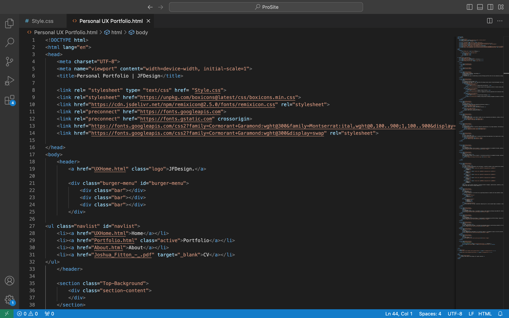

I designed and built my portfolio website to showcase my skills and talents, ensuring it reflects my personal style and professionalism. The site features a clean, minimalist design with intuitive navigation, high-quality images, and detailed project descriptions, effectively highlighting my expertise and creativity.


Outlining the primary objectives for the dashboard.
Developing a research plan and conducting interviews via Mural

Above: Mural with a global consultancy recruiter.

Above: Mural with a University lecturer.
I created two empathy maps from my user research to better understand my target users, helping me design a UX portfolio that meets their needs and addresses their pain points.
I developed empathy maps into user personas to capture key user traits, helping me design a UX portfolio that addresses their goals, needs, and frustrations.
To conclude my research, I created user journey maps for each persona to illustrate how they would use my portfolio for their specific tasks. I use this approach to help me identify opportunities to improve my portfolio's design, making it more intuitive and user-friendly.
I used Barclays' signature teal and white throughout the dashboard design to ensure it remained on brand. Teal was applied to buttons and highlights, while a white background with navy fonts maintained user readability.
White
#FFFFFF
Platinum
#EAE6E3
Battleship Grey
#858585
Onyx
#5d5d5d
Black
#000000
Branding the dashboard with Barclays teal logo to contrast with a white background.
By integrating insights from my research, I structured my portfolio to accommodate the needs, preferences, and journey stages of my target audience, ensuring a compelling and user-centric presentation of my work and skillset.
I translated my sketches into a low-fidelity digital mockup using Adobe XD to visualise the structure and layout of my portfolio website, allowing me to test and refine the user experience.
.png)
After completing the wireframe, I began the development phase by constructing my website in VS Code, crafting each webpage using HTML, CSS & Javascript to define its layout, functionality and stylistic elements.
My home page intorduces my personality